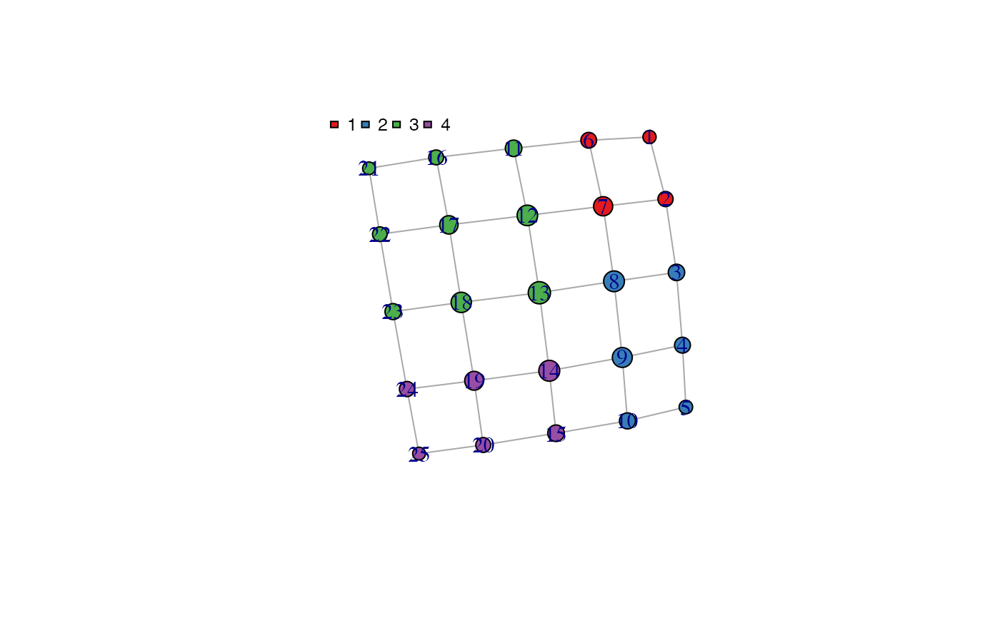

make_tda_graph.RdMake igraph object by calculating adjacency, resizing nodes, weighting edges and color nodes.
make_tda_graph( f_sim_map, data, enrich_var, color_method = "clust_color", my_colors = c("#00A3DD", "#60C659", "#FFBC21", "#FF7F1E", "#EF2B2D") )
| f_sim_map | TDAmapper object |
|---|---|
| data | Processe data frame of the original data. |
| enrich_var | Character string of enrichment variable. Any column name of the processed data frame. |
| color_method | Character string specifying the coloring method. Can be 'basic', 'clust_shade' or 'clust_color'. |
| my_colors | Character vector of hex values specifying color palette for enrichment. |
igraph object of the graph output.
#> IGRAPH daa9505 U-W- 26 41 -- #> + attr: node_color (g/x), clusters (g/x), pal (g/x), size (v/n), color #> | (v/c), weight (e/n) #> + edges from daa9505: #> [1] 1-- 2 1-- 6 2-- 3 2-- 7 3-- 4 3-- 8 4-- 5 4-- 9 5--10 6-- 7 #> [11] 6--11 7-- 8 7--12 8-- 9 8--13 9--10 9--14 10--15 11--12 11--16 #> [21] 12--13 12--17 13--14 13--18 14--15 14--19 15--20 16--17 16--21 17--18 #> [31] 17--22 18--19 18--23 19--20 19--24 20--25 21--22 22--23 23--24 24--25 #> [41] 24--26